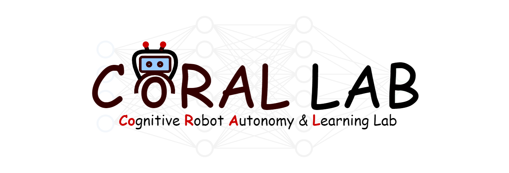

Ahmed H. Qureshi
 |
 Director, Cognitive Robot Autonomy and Learning (CoRAL) Lab Assistant Professor, Department of Computer Science, Purdue University Affliate Professor, Institute for Cognitive Computing Affliate Professor, Center for Innovation in Control, Optimization, and Networks Email: ahqureshi [AT] purdue [DOT] edu Office: HAAS 152 Office Tel: (765)-496-3071 |
Research Interests
|
|
|
|
News
- Sep 2021
- Aug 2021
- May 2021
- Nov 2019
| We have multiple PhD/Postdoc positions available [apply]! | |
| I joined Purdue University as an Assistant Professor. | |
| We organized a workshop on Machine Learning for Motion Planning at ICRA'21. | |
| We organized a workshop on Learning Representations for Planning and Control at IROS'19. |
Teaching
- Spr 2022
- Fall 2021
- Fall 2019
- Fall 2015
| CS593 Robotics, Purdue University (Upcoming!). | |
| CS592 Introduction to Robot Motion, Purdue University. | |
| ECE 276C Robot Reinforcement Learning, UC San Diego. | |
| Deep Learning, Osaka University. |
Prospective Students, Scholars & Collaborators
We are actively looking for students/scholars at all levels (BS/MS/PhDs/Post-docs) with a strong relevant background in Robotics, Machine Learning, and Computer Vision. If you are interested in working with me, please fill out this form.For collaborations and joint partnership: Our work aligns closely with the industry for solving a wide range of collaborative robotics and autonomous driving tasks in the natural dynamic world. If you have an idea or are interested in collaboration, please contact us.